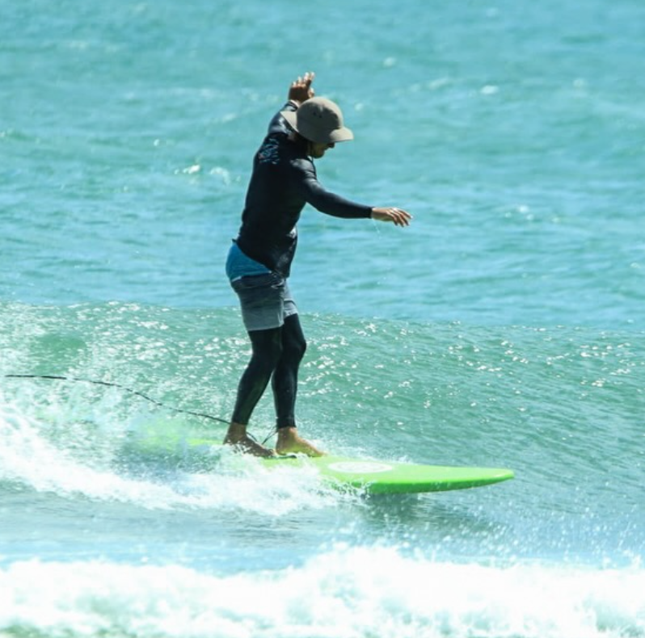
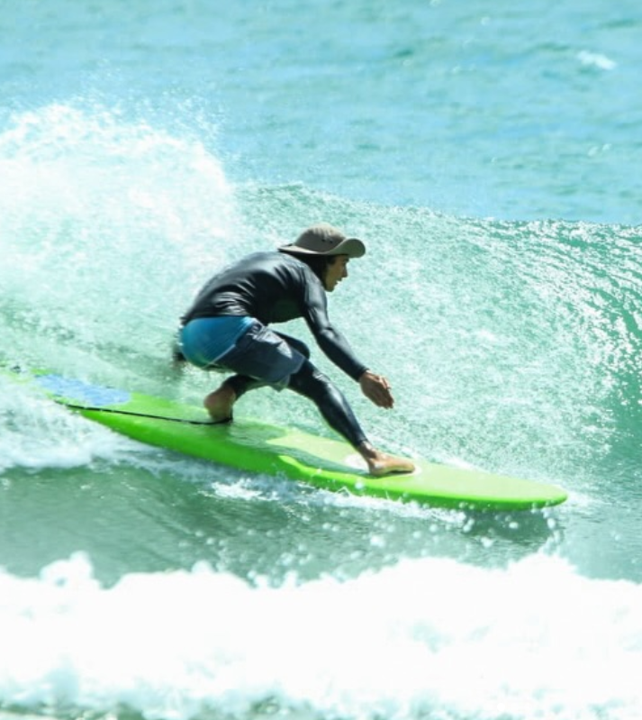
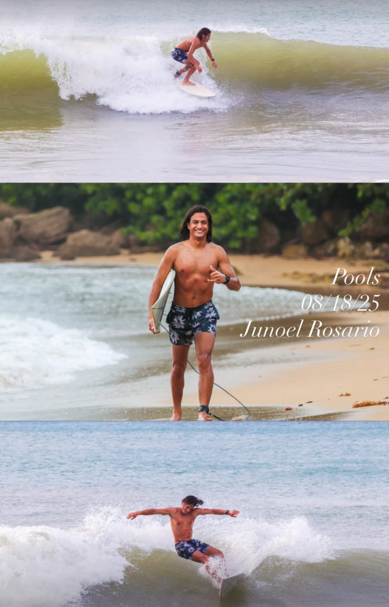

Buena vibra
Un ambiente de aprendizaje relajado ayuda a reducir el miedo y aumentar la confianza desde la primera sesión.
Junoel Rosario ofrece clases de surf para adultos jóvenes en el sureste de Puerto Rico. Con más de 2 años de experiencia, certificaciones de salvavidas y CPR, y un estilo de enseñanza paciente y motivador, cada sesión está diseñada para ayudarte a crecer dentro y fuera del agua.



Más que enseñar a pararte sobre una tabla, su enfoque busca que aprendas a escuchar el océano, desarrollar disciplina y disfrutar el proceso.
El surf no es solo un deporte. Es conexión con la naturaleza, paciencia para volver a intentarlo y respeto por el mar y por los demás.
Un ambiente de aprendizaje relajado ayuda a reducir el miedo y aumentar la confianza desde la primera sesión.
Cada caída forma parte del proceso. El objetivo es mejorar poco a poco con constancia y enfoque.
Antes de surfear bien, primero se aprende a observar condiciones, corrientes y a moverse con responsabilidad.